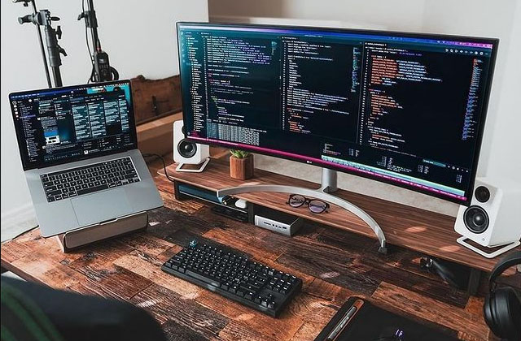

Latest Projects





O mundo do desenvolvimento full-stack me fascina pela possibilidade de dar vida a projetos inovadores, desde a ideia inicial até a concretização final. Estou sempre em busca de novas tecnologias e ferramentas para aprimorar minhas habilidades e oferecer soluções de ponta. a paixão pela programação me leva a criar produtos digitais que simplificam a vida das pessoas e otimizam os processos de negócios.
A paixão por criar experiências digitais únicas me levou a mergulhar no mundo do desenvolvimento web. Com uma base sólida em HTML, CSS e JavaScript, desenvolver habilidades em diferentes frameworks e bibliotecas, o que me permite lidar com projetos de complexidade variada. Desde a criação de sites estáticos até a criação de aplicações web interativas; gosto de explorar novas tecnologias e encontrar soluções inovadoras para atender às necessidades dos meus clientes.
Read MoreResolver problemas complexos é o que me motiva a trabalhar no backend. Gosto de enfrentar desafios técnicos e encontrar soluções inovadoras para otimizar o desempenho das aplicações.
Read MoreAcredito que um aplicativo de sucesso é aquele que não apenas funciona bem, mas também oferece uma experiência de usuário excepcional. Me dedico a criar interfaces intuitivas e envolventes, sempre tendo em mente as necessidades do usuário. Meus conhecimentos técnico com sensibilidade estética para desenvolver aplicativos que deixem sua marca.
Read More

Como desenvolvedor full-stack, tenho uma visão holística do desenvolvimento web. Sou capaz de entender as necessidades de um projeto em 360 graus, desde a fase inicial design até a implantação final. Minha filosofia é baseada na criação de código limpo, eficiente e sustentável, sempre de olho na usabilidade e na experiência do usuário. Estou sempre em busca de novas tecnologias e melhores práticas para aprimorar minhas habilidades e oferecer soluções de ponta.
Read More